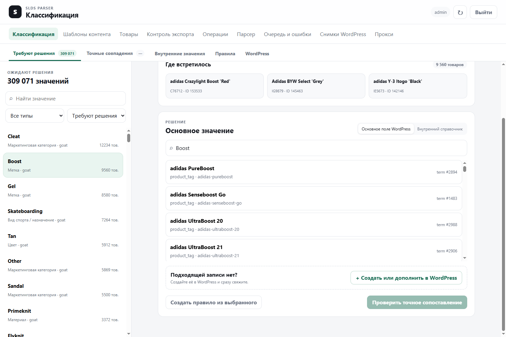
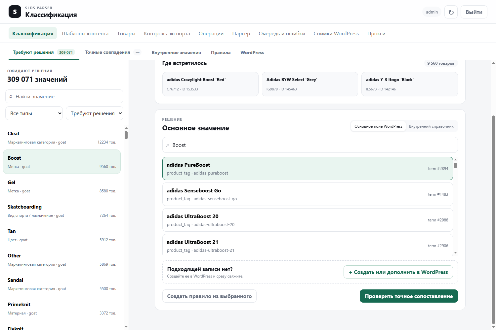
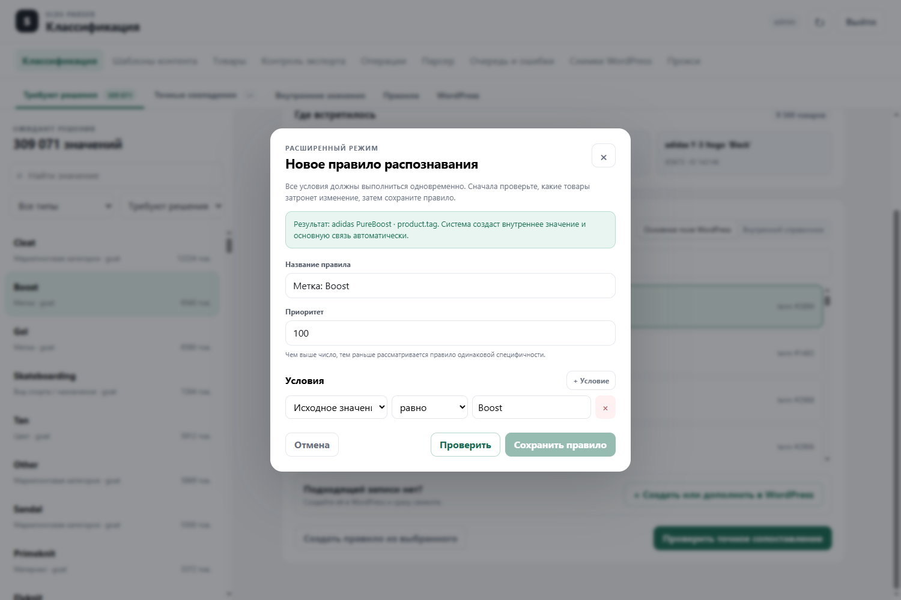
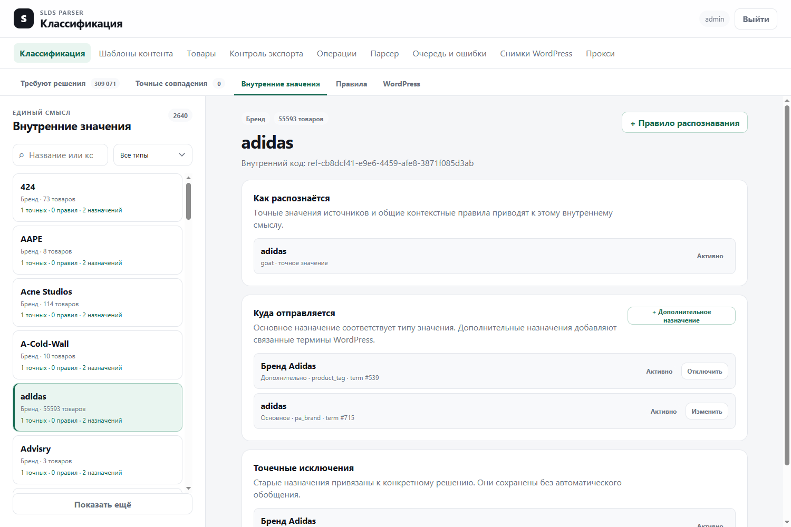
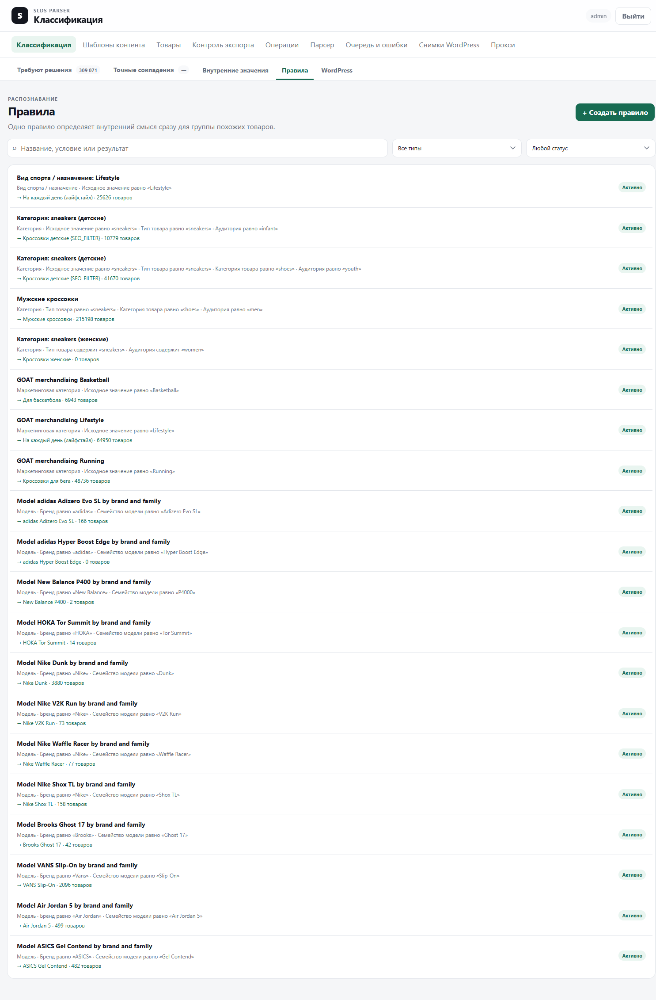
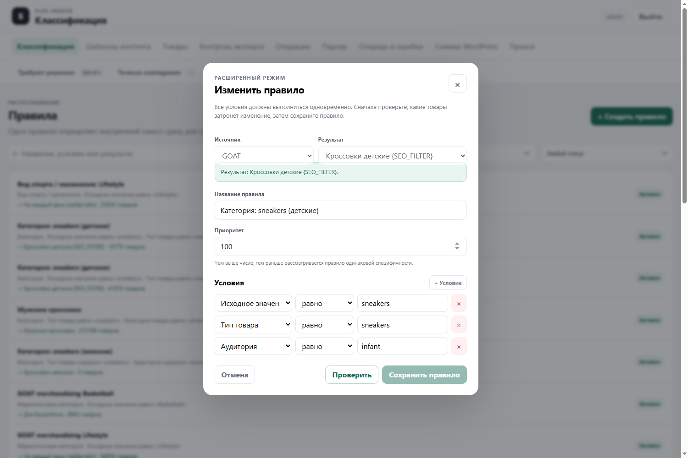
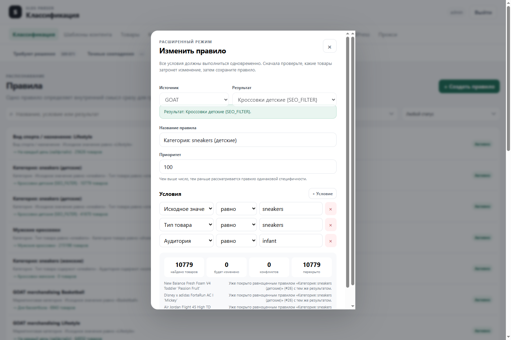
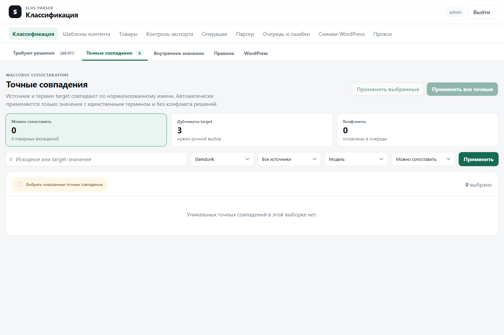
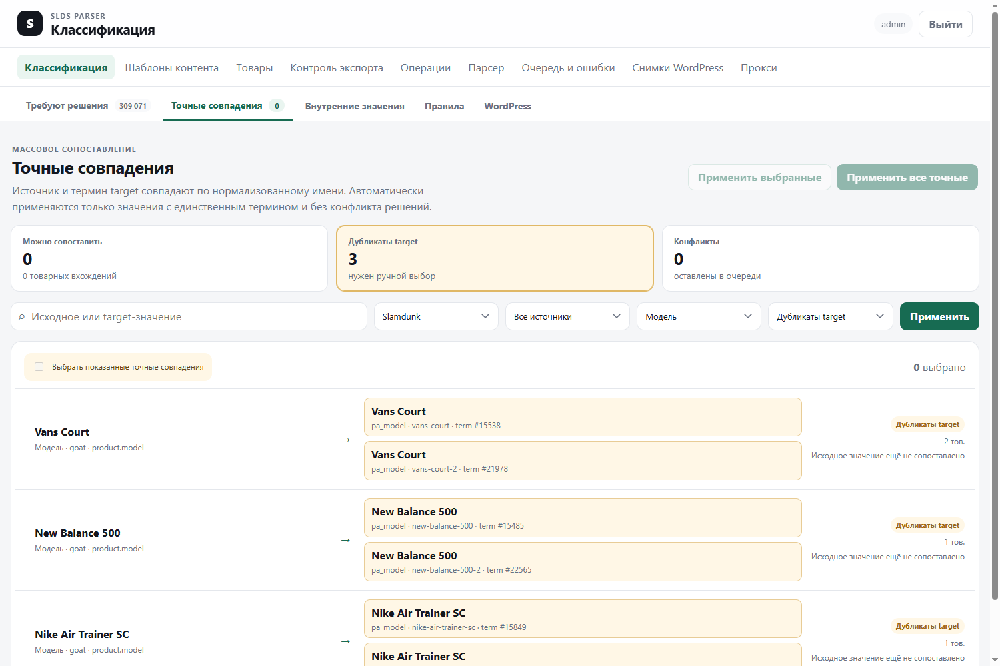
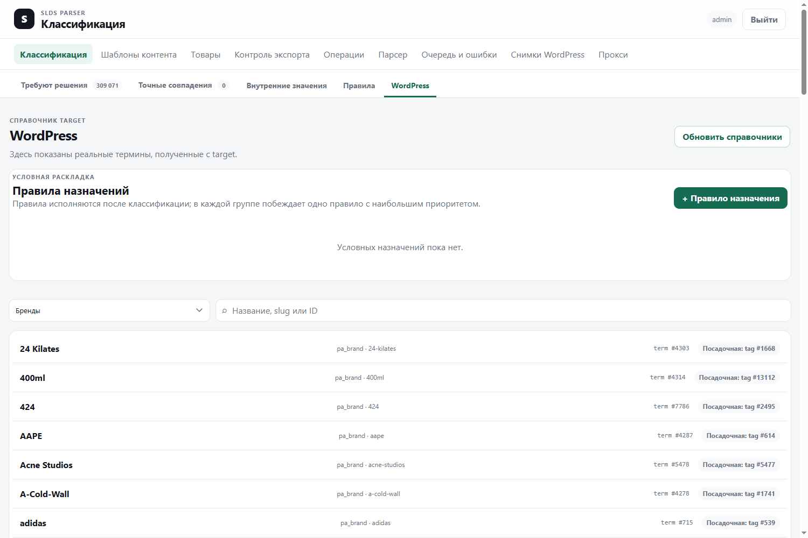

Точные связи, внутренние значения, правила распознавания, WordPress-назначения, конфликты и безопасный рабочий процесс — со снимками production-интерфейса и реальными примерами.
После сбора и обработки товара процессор формирует универсальный DTO. В нём есть обычные поля товара и массив referenceCandidates — значения, которые нужно привести к справочникам. Классификатор для каждого кандидата выбирает одно из четырёх состояний:
| Состояние | Что означает | Что видно в интерфейсе |
|---|---|---|
resolved | Найдено внутреннее значение через точную связь или правило. | Кандидат исчезает из обычной очереди. |
ignored | Для этой точной группы явно решено ничего не назначать. | Кандидат не требует решения и не проверяет правила. |
unresolved | Нет точной связи и ни одно правило не подошло. | «Не сопоставлено». |
ambiguous | Два одинаково сильных правила ведут к разным внутренним значениям. | «Конфликт правил». |
waiting_apply | Решение уже записано, но затронутые товары ещё не пересчитаны. | «Ждёт пересчёта». |
pa_brand term #715 и дополнительный product_tag term #539.export_product после preview и контроля экспорта.| Термин | Простое объяснение |
|---|---|
| Кандидат | Один факт, который классификатор должен понять: например, type=tag, sourceValue=Boost. |
| Исходное значение | Текст от источника до сопоставления: Boost, Tan, sneakers. |
| Тип | Смысл значения: бренд, модель, категория, цвет, материал, метка и т. д. |
| Область / scope | Логическое место назначения: product.brand, product.model, product.tag.technology. |
| Сущность / subjectKind | К чему относится кандидат: ко всему товару (product) или к варианту (variant). |
| Контекст | Факты, которые входят в идентичность точной группы. Для модели это сейчас бренд и семейство; для категории — route, productType, productCategory, audience и ageGroups. |
| Evidence | Дополнительные доказательства для правил: title, brand, family, audience, route и другие верхнеуровневые факты. Evidence не входит в ключ точной связи. |
| Внутреннее значение | Единый смысл, независимый от источника и WordPress. Несколько source-формулировок могут указывать на одно внутреннее значение. |
| Точная связь | Решение для одной точной группы: источник + тип + scope + нормализованное значение + весь context. |
| Правило распознавания | Обобщённое условие, применяемое к любому кандидату этого типа от выбранного источника. |
| Основное назначение | Связь внутреннего значения с его штатным полем target, например бренд → pa_brand. |
| Дополнительное назначение | Ещё один WordPress-термин для того же внутреннего смысла, например бренд adidas дополнительно → брендовый product_tag. |
Текущий GOAT-процессор выдаёт только факты, имеющие подтверждённый target-смысл. Это важно: очередь не является свалкой всех полей GOAT.
| Тип | Исходное значение | Контекст / evidence |
|---|---|---|
| Бренд | brandName или brand | Контекст пустой; факты товара доступны в evidence. |
| Модель | Название товара без подтверждённой конечной расцветки | Context: brand + family. Evidence: полный title и другие факты. |
| Категория | productType, иначе productCategory, иначе route | Context: route, productCategory, productType, audience, ageGroups. |
| Маркетинговая категория | GOAT categoryRaw | Context: route, productCategory, productType, audience. |
| Цвет | color | Контекст пустой. |
| Материал | upperMaterial | Контекст пустой. |
| Метка | technologies, midsole и явные source tags | Разные scope для технологии и source tag. |
| Назначение | Только явные activity / activities / activitiesList | Context: productCategory + productType. |
| Высота обуви | low / mid / high от отдельной операции | Evidence содержит title и сведения модели распознавания. |
Boost и boost считаются одним нормализованным значением. Контекст при этом должен совпасть целиком и точно.
| Кнопка | Что делает | Что не делает |
|---|---|---|
| ↻ Обновить очередь | Перечитывает очередь и счётчики. | Не пересобирает товары и не синхронизирует WordPress. |
| Игнорировать | Создаёт точное решение ignored для выбранной группы и ставит товары на пересчёт. | Не является общим правилом для похожих значений. |
| + Создать или дополнить в WordPress | Открывает форму создания поддерживаемого WordPress-термина и, после отдельного сохранения, связывает его с внутренним значением. | Не все типы разрешено создавать: цвета и сложные термины могут требовать метаданные. |
| Проверить точное сопоставление | Показывает число затронутых товаров. После проверки текст кнопки меняется на «Сохранить точное сопоставление». | Первое нажатие ничего не записывает. |
| Создать правило из выбранного | Открывает редактор правила, переносит выбранный результат и подставляет предложенные условия. | Не сохраняет правило автоматически и не проверяет бизнес-смысл выбранного target-термина. |
Слово «выбранного» относится к выбранному результату справа: термину WordPress либо внутреннему значению. Выбранное значение очереди слева задаёт исходную точку и примеры.


Исходное значение равно Boost.| Тип | Предложение | Что проверить вручную |
|---|---|---|
| Категория | sourceValue = … плюс существующие productType, productCategory, audience из context. | Не пропущен ли важный route или ageGroups; действительно ли все условия нужны. |
| Модель | context.brand = … и evidence.title contains sourceValue, если данные есть. | Часто безопаснее заменить title на стабильное context.family; проверить разные расцветки и соседние модели. |
| Все остальные типы | Только sourceValue = выбранный текст. | Не слишком ли широко; совпадает ли семантика типа и выбранного WordPress-термина. |
Boost — широкая технология/метка, а adidas PureBoost — конкретная линейка. Условие sourceValue = Boost охватывает 9 560 товаров разных моделей. Кнопка не понимает эту семантическую ошибку: она только перенесла выбранный результат и исходный текст. Правильное действие — найти или создать термин со смыслом технологии Boost либо оставить группу нерешённой. Добавление бренда adidas всё равно не превращает любую технологию Boost в модель PureBoost.Это лучший экран для ответа на вопрос «полностью ли настроен смысл». Он показывает всю цепочку: чем внутреннее значение распознаётся и куда оно выходит.

pa_brand, дополнительное назначение в product_tag.| Элемент | Назначение |
|---|---|
| Счётчик товаров | Сколько текущих активных наблюдений разрешено в это внутреннее значение. |
| «точных» | Сколько точных source mappings указывает сюда. |
| «правил» | Сколько правил распознавания выдаёт это значение. |
| «назначений» | Сколько активных выходов в target: основные и дополнительные. |
| + Правило распознавания | Создаёт правило для выбранного внутреннего значения. Источник и условия задаются вручную. |
| + Дополнительное назначение | Добавляет WordPress-термин для всех случаев, где распознано это внутреннее значение. |
| Изменить у основного | Переназначает основную target-связь после preview. |
| Отключить у дополнительного | Выключает дополнительную проекцию и пересчитывает затронутые товары. |
| Точечные исключения | Старые назначения, привязанные к конкретному mapping/rule, а не ко всему внутреннему значению. Их нельзя автоматически считать общими. |
term #715. Оба источника могут прийти к одному внутреннему бренду, а target-связь настраивается один раз.

| Поле | Что означает |
|---|---|
| Источник | Правила всегда принадлежат конкретному источнику. Текущие production-правила — GOAT. |
| Результат | Внутреннее значение, которое получат совпавшие кандидаты. При редактировании не меняется. |
| Название | Человеческое описание; на совпадение не влияет. |
| Приоритет | Первый и главный параметр силы правила. Диапазон — от −10 000 до 10 000. |
| + Условие | Добавляет ещё одно обязательное условие. Между условиями всегда логическое И. |
| × у условия | Удаляет условие из черновика. Без условий правило недопустимо. |
| Проверить | Выполняет read-only preview по сохранённым наблюдениям. |
| Сохранить правило | Разблокируется только после успешной проверки текущего черновика. |
| Поле интерфейса | Техническое поле | Пример |
|---|---|---|
| Исходное значение | sourceValue | Boost, sneakers |
| Область | scope | product.tag.technology |
| Сущность | subjectKind | product или variant |
| Бренд / семейство / аудитория… | context.brand, context.family, context.audience | Факты, которые процессор положил в контекст именно этого кандидата. |
| Название товара / данные товара… | evidence.title, evidence.brand и т. п. | Дополнительные доказательства, не входящие в ключ точной связи. |
| Оператор | Точная семантика | Пример | Риск |
|---|---|---|---|
| равно | После trim + NFKC + lowercase строки должны быть полностью равны. | brand = Nike совпадёт с nike. | Самый предсказуемый оператор. |
| содержит | Нормализованная фактическая строка содержит ожидаемую подстроку. | Title содержит Air Max 1. | Surge совпадёт и с Surge Golf, и с Surge 4. |
| все слова | Каждый фрагмент, разделённый пробелами, должен встречаться как подстрока; порядок не важен. | air max совпадёт с Max Air. | Это не строгая токенизация: короткие фрагменты могут совпасть внутри другого слова. |
| regex | JavaScript RegExp с флагами i и u; максимум 256 символов. | ^Nike\s+.*\bDunk\b | Использовать только если equals/contains недостаточно; обязательно тестировать крайние случаи. |
Сила правила вычисляется как пара [priority, количество условий].
ambiguous.
| Показатель | Как читать |
|---|---|
| Найдено товаров | Сколько уникальных товаров удовлетворяют условиям независимо от того, победит ли правило. |
| Будет изменено | Сколько товаров реально получат новый результат либо изменят победителя. |
| Конфликтов | Сколько наблюдений станут ambiguous из-за равноценных правил с разными результатами. |
| Перекрыто | Совпало, но победит точная связь или более сильное/равноценное существующее правило. |
В примерах preview указывается причина: «новое правило будет применено», «покрыто точным сопоставлением», «более точное правило имеет приоритет», «равноценное правило ведёт к другому результату».
Это отдельный инструмент массового создания точных связей, а не правил. Он сравнивает нормализованное исходное имя с актуальным именем target-термина.



| Элемент | Назначение |
|---|---|
| Обновить справочники | Читает актуальные справочники через target provider и обновляет локальный snapshot. Не создаёт товар. |
| Раздел WordPress | Бренды, модели, метки, размеры, высота, категории, цвета, материалы, сезоны, назначение. |
| Поиск | Ищет по локальному снимку выбранного раздела. |
| Посадочная: tag #… | Связанный WordPress product_tag, который может добавляться вместе с брендом/моделью как подтверждённая проекция. |
| + Правило назначения | Создаёт target-specific правило, которое выполняется уже после классификации и раскладывает итоговый товар по WordPress. |
| Механизм | Когда работает | Пример | Где настраивается |
|---|---|---|---|
| Основное назначение | Для каждого resolved внутреннего значения при сборке target payload. | Внутренний adidas → pa_brand term #715. | «Внутренние значения» → Изменить основное. |
| Дополнительная проекция | Вместе с конкретным внутренним значением либо конкретным решением. | adidas дополнительно → product_tag term #539. | «Внутренние значения» → Дополнительное назначение. |
| Правило назначения target | После классификации, по полям итогового DTO и resolved values. | Если resolved category = X и audience = men, заменить product_cat на мужскую категорию. | «WordPress» → Правила назначений. |
groupCode. В каждой группе побеждает одно совпавшее правило с максимальным priority.equals и one_of по resolved values, product attributes/metadata и source-neutral candidates.pa_brand adidas.Безопасная схема: context.brand = Nike И context.family = Pegasus… либо другое подтверждённое стабильное семейство. Проверить разные расцветки, мужские/женские версии и соседние семейства. Не использовать глобальное title contains Pegasus как единственное условие.
sourceValue = sneakers И context.productType = sneakers И context.audience = infant → внутренняя категория «Кроссовки детские».
Здесь дополнительные условия меняют бизнес-смысл, поэтому правило оправдано. Preview должен показать детские товары, отсутствие взрослых товаров и отсутствие конфликтов с youth/men/women.
tag Boost → модель/метка adidas PureBoost.
Правильно: определить, какой внутренний смысл представляет GOAT-кандидат Boost. Если это технология — связать с внутренней технологической меткой Boost и соответствующим WordPress product_tag. Если подходящего target-термина нет — создать корректный термин через разрешённый процесс или оставить нерешённым. Не сужать семантическую ошибку случайным условием.
Общее правило верно для 99% товаров, но одна точная контекстная группа должна идти в другое значение. Сохраните точную связь для этой группы. Она победит правило без изменения общей логики. Обязательно убедитесь, что context выбранной группы не охватывает больше товаров, чем ожидается.
| Вопрос | Если «да» | Если «нет» |
|---|---|---|
| Решение верно только для текущего sourceValue + полного context? | Точная связь. | Проверить возможность правила. |
| Есть повторяемый смысл, выраженный стабильными полями? | Правило с этими полями. | Оставить точечное решение. |
| Нужно только добавить ещё один WordPress-термин ко всем случаям внутреннего значения? | Дополнительное назначение. | Не classifier rule. |
| Нужна условная раскладка только для WordPress после классификации? | Target assignment rule. | Основное/дополнительное назначение. |
| Есть сомнение в семантике? | Не сохранять; собрать примеры. | Продолжить с preview. |
Это стиль вторичной команды, а не надёжный признак disabled. Если результат не выбран, нажатие покажет подсказку. Если выбран WordPress-термин или внутреннее значение, откроется редактор.
Нет. Она создаёт только черновик в диалоге. Затем нужны preview и отдельное сохранение.
Нет. Алгоритм небольшой и фиксированный: категории получают несколько полей context, модели — brand + title contains, остальные типы — sourceValue equals. Черновик обязан проверить человек.
При сохранении нового правила система может атомарно создать внутреннее значение, основную связь этого значения с выбранным target-термином и само classifier-правило. Точная source mapping при этом не создаётся: распознавание идёт через правило.
Все совпадения уже покрыты точными связями либо существующими правилами той же или большей силы. Смотрите колонку «перекрыто» и текст причин.
Точная связь. Priority сравнивается только между правилами.
Сначала priority, затем число условий. При полном равенстве разные результаты дают конфликт, одинаковый результат остаётся однозначным.
Создаёт точную ignored-запись для текущей группы. Поскольку точная запись проверяется первой, правила для этой группы не применятся.
Нет. Оно обновляет локальную конфигурацию, аудит и очередь пересчёта. Внешний write происходит только в отдельном экспорте.
Различаются тип, scope или context. Например, одинаковый текст может быть технологией и source tag либо встречаться в разных товарных контекстах.
Только когда сочетание equals/contains и контекстных полей не описывает воспроизводимое правило. Regex сложнее проверять и сопровождать; длина ограничена 256 символами.
contains по слишком короткому слову.